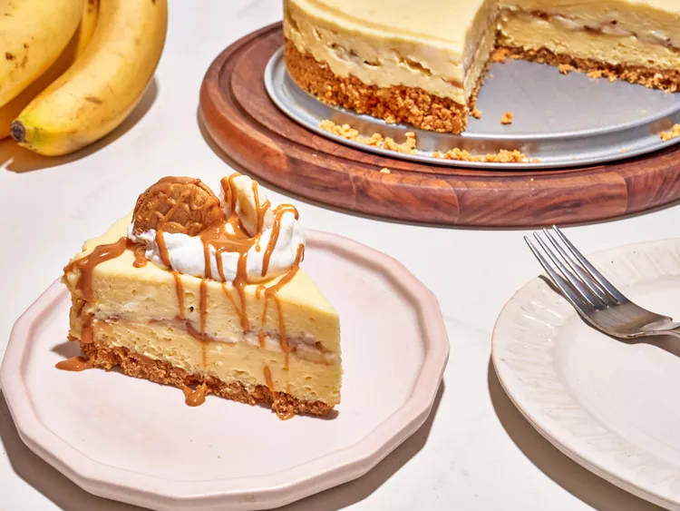

No-Bake Nutter Butter Banana Pudding Cheesecake

Ingredients
Original recipe (1X) yields 12 servings
- 20 Nutter Butter sandwich cookies, plus more for garnish
- 5 tablespoons butter, melted
- 2 (8-ounce packages) cream cheese, softened
- 1 (8-ounce) can sweetened condensed milk
- 2cups heavy whipping cream, divided
- 1 (3.4 ounce) package vanilla instant pudding mix
- 1/2 (3.4 ounce) package banana instant pudding mix
- 1 1/2 teaspoons vanilla extract
- 1/8 teaspoon salt
- 2 bananas, thinly sliced
- 3 tablespoons peanut butter, plus more for topping
- 2 tablespoons powdered sugar
Directions
- Pulse cookies in a food processor until finely crushed. Add melted butter and pulse just until combined. Press mixture into the bottom of a 9 inch spring form pan. Freeze crust while filling is prepared.
- In a stand mixer fitted with a paddle attachment, beat cream cheese until light and fluffy. Add in sweetened condensed milk and 1 1/2 cups cream and beat until smooth, scraping down the sides of the bowl as necessary. Add in pudding mixes, vanilla, and salt and blend until smooth and well combined. Mixture will be very thick.
- Spread half of the pudding mixture into the pan over the crust. Add banana slices in an even layer over pudding mixture. Melt peanut butter for about 15 seconds in the microwave and drizzle evenly over the banana slices. Top with remaining pudding mixture and spread into an even layer. Refrigerate for 2 hours and up to overnight.
- Whip remaining cream and powdered sugar together until soft peaks form. Serve cheesecake topped with whipped cream. Top with half of a cookie and more melted peanut butter if desired.
Return to top
Return to main page